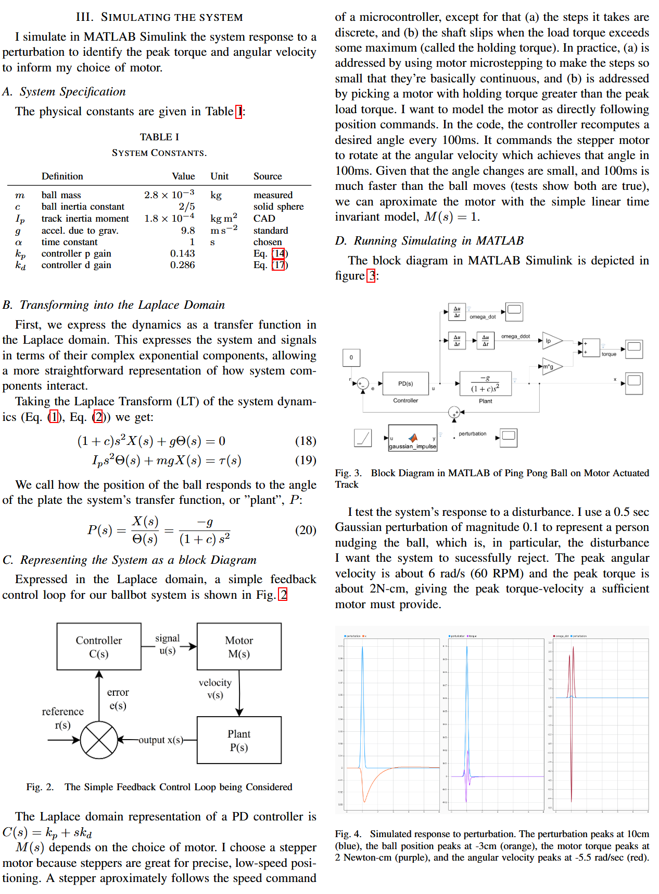

Ball-Balancing PID Control System
Challenge
Most autonomous systems rely on feedback control to self-correct when disturbed from their planned motion. One algorithm popular for its simplicity and robustness is the proportional-integral-derivative (PID) controller.
I wanted practical experience implementing a PID controller, so applied it to the fun toy problem of controlling the position of a ball rolling on a rotating track.
Solution Summary
I set a goal for the ball to be stopped at the mid-line of the track. A sensor measures the real-time position of the ball, and a motor adjusts the angle of the track. A PID controller commands the motor to restore the ball to the desired equilibrium state. Engineering the system using a first principles approach, I:
- Modeled the system dynamics using Lagrangian mechanics and linearized around the equilibrium point
- Tuned the controller for optimal performance using damped harmonic oscillator theory
- Simulated the system in MATLAB using Laplace domain analysis to determine motor specifications
- Designed and built the physical system using SolidWorks CAD, 3D printing, and event-driven C++ programming
System Modeling
Controller Design
System Simulation
Physical Implementation
Result
The above video of the system self-correcting following a perturbation shows the ball's behavior approximately aligns with the intended motion of smoothly returning to a stop at the center with minimal overshoot, except for the following:
The actual ping pong ball has a unexpectedly large oscillation while settling. I believe this is due to an unsymmetrical mass distribution within the ball itself, causing it to have an unexpected wobble. I confirmed this by seeing that it wobbles when stopping, even on a perfectly flat table.
The ball stops with some steady state error. I believe this is due to unaccounted for resistance to the ball rolling. Theoretically, the ball should start rolling the moment the track is at a nonzero angle. In reality, there's some significant angle threshold before the ball starts, which I confirmed through testing. This is probably due to some local flatness on the surface of the ball. When the ball is close to the center, the PD controller calls for such a minute correction, the track angle isn't enough to move the ball.
For a future version of the project, I might investigate use of a different type of ball (i.e. a a steel bearing), that doesn't have these same issues.
Reflection
The main lessons I learned from this project are:
- The value of first-principle design. For example, I spent hours trying to tune the PID controller, but couldn't quite get it right. I returned to the differential equation and realized it has the form of a damped harmonic oscillator. Using that, I solved for the constants which give critically damped motion and got my desired behavior without any tuning at all.
- The value of a minimum viable product. I started the project with lofty visions and wanting to make every design decision methodically. I made a CAD model with a whole belt system, a simulator with full DC motor equations, and fleshed out an event-driven framework for the code. All that was way overkill, and trying to do it all stalled my progress. I realized to finish the project I had to identify the most critical systems to focus on, and move quicker on the rest. I put a lot of thought in to the PD controller (deriving the equations), the safety limit switches (secure wires, full unit testing), and the track surface (designed for 3D printing so the top is smooth). In contrast, I moved quickly on designing the overall box for the electronics, and track shape. Sometimes my shortcuts caused failure, like when I tried press fitting the track on the motor shift, and it wore down and slipped, but I'd fix the problems when they happened (I added a coupler to secure the connection). Letting myself fail quickly on non-critical systems made me learn much quicker, and get more done.